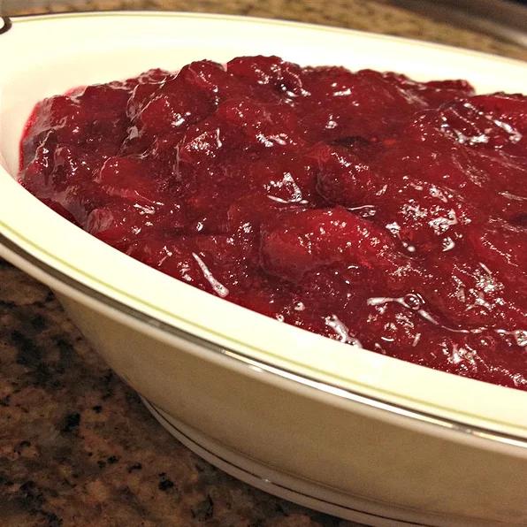

Cranberry sauce

Description
Look no further for the Best Ever Cranberry Sauce! This easy and delightful recipe takes only 15 minutes to make and a handful of ingredients! Spiced with cinnamon and sweetened with orange juice, it is the best combination of sweet and tart! The perfect complement to your holiday meal!
Ingredients
- 12 ounces cranberries
- 1 cup white sugar
- 1 cup orange juice
Steps
- In a medium sized saucepan over medium heat, dissolve the sugar in the orange juice. Stir in the cranberries and cook until the cranberries start to pop (about 10 minutes). Remove from heat and place sauce in a bowl. Cranberry sauce will thicken as it cools.